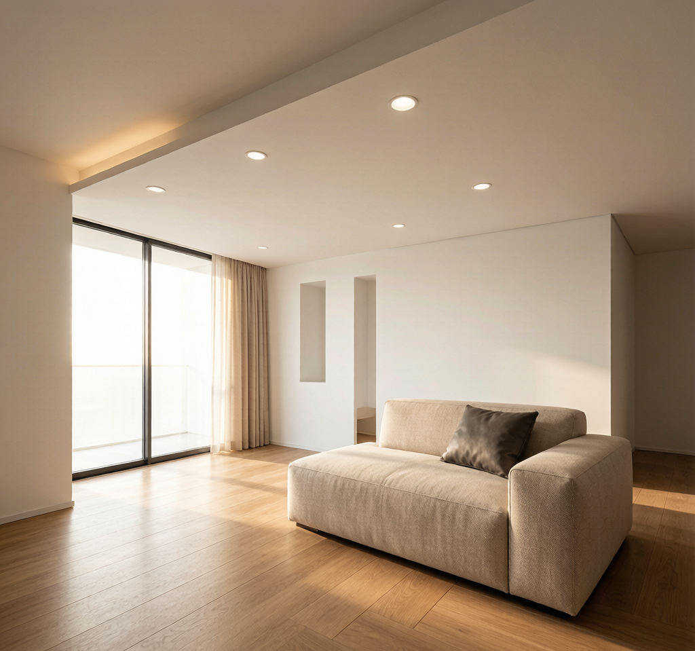
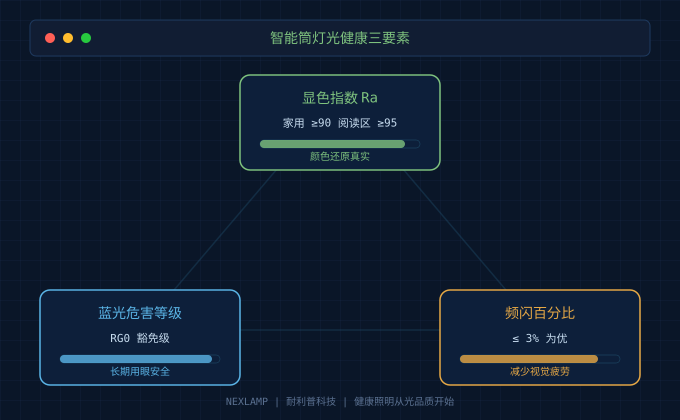
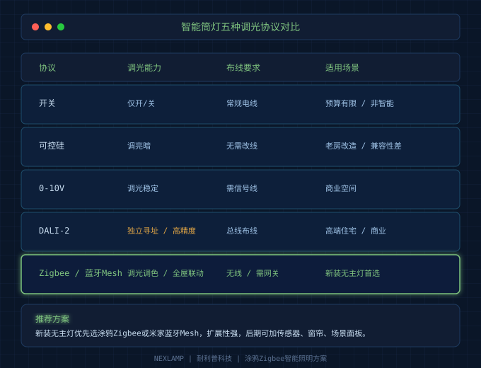
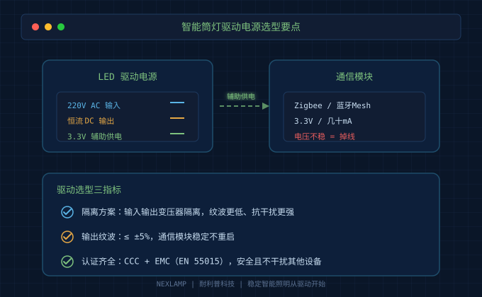

2026年，无主灯设计在新房装修里的渗透率已经超过60%。打开任何一个装修论坛，"见光不见灯""光环境服务""人因照明"这些词满眼都是。可现实是，至少有四成的人在筒灯上翻过车：眩光刺眼、色温跑偏、调光闪烁、智能灯掉线……问题五花八门。
作为一个在照明行业摸爬滚打十多年的人，我见过太多"灯是装上了，但光不对"的案例。今天这篇文章，就把2026年Q3选购智能筒灯最容易踩的四个坑拆开讲清楚，帮你在下单前把该看的参数看明白。
坑一：只看瓦数和亮度，忽视光健康
很多人选筒灯的第一句话是："这个多少瓦？亮不亮？"瓦数和亮度当然重要，但无主灯设计的核心不是"亮"，而是"光品质"。
显色指数（Ra） 是最容易被忽略的参数。家用筒灯建议Ra≥90，阅读、化妆、用餐这些对颜色还原要求高的区域，最好Ra≥95。市面上一些低价筒灯标称Ra80甚至更低，家具、墙面、食物都会显得发灰发闷。
蓝光危害等级 要看RG0豁免级。尤其是儿童房、老人房、卧室这些长时间停留的空间，RG0是最低门槛。别被"全光谱"三个字忽悠，问商家要光谱报告和蓝光危害测试报告。
频闪 是另一个隐形杀手。简单的判断方法：打开手机相机，把快门调到专业模式的1/1000秒以下，对着点亮的筒灯看，如果出现明显条纹，就说明频闪控制不过关。优质的驱动电源能把频闪百分比做到3%以内。

坑二：协议选错，后期升级困难
无主灯设计不是一次性的，很多人先装一部分，后面再补灯带、射灯、传感器。如果一开始协议没选对，后面就是无尽的麻烦。
目前主流的控制协议有五种：开关（非智能）、可控硅调光、0-10V、DALI、涂鸦Zigbee/米家蓝牙Mesh。
- 开关方案：最便宜，但只能开/关，不能调光调色，后期改智能基本要换灯。
- 可控硅调光：适合老房改造，不用重新布线，但兼容性差，不同品牌和调光器搭配容易闪、调不平。
- 0-10V：商业空间用得最多，调光稳定，但需要单独拉信号线，家装布线成本高。
- DALI-2：每盏灯独立寻址，调光精度高，适合高端无主灯设计，但系统和灯具成本都高。
- 涂鸦Zigbee/米家蓝牙Mesh：最主流的家装智能方案，支持App、语音、传感器联动，扩展性强。
我的建议：如果是新装无主灯，优先选涂鸦Zigbee或米家蓝牙Mesh方案。不仅调光调色方便，后期加人体传感器、窗帘、场景面板都能联动。但注意，网关要稳定，同一空间尽量统一协议，别Zigbee和蓝牙Mesh混着用，否则体验会很割裂。

坑三：开孔尺寸没规划，换灯像拆家
无主灯设计最常见的后悔事之一：吊顶开完孔，发现喜欢的筒灯装不进去。
常见开孔尺寸有75mm、80mm、90mm、100mm几种。75mm是国内家装最普遍的尺寸，可选产品最多；90mm、100mm多见于商业空间或老款灯具。
我的建议是：家用无主灯统一按75mm开孔。这样未来不管换哪个品牌的筒灯、射灯，基本都不会被尺寸卡住。另外，吊顶高度也要提前确认。超薄筒灯可以做到25mm以内，但带大角度透镜或散热结构的筒灯可能需要40mm以上净高。
还有一个细节：灯孔间距。筒灯不是越密越好，一般客厅按1.2米1.5米间距排布，卧室1.5米2米。太密会像个蜂窝，太疏又会有暗区。最好让灯光设计师或者电工按空间面积和照度需求做排布图，别凭感觉打孔。
坑四：驱动电源不好，智能灯迟早掉线
很多人智能灯掉线，第一反应是"网关不行""网络不好"，于是买中继器、换路由器，结果问题还在。其实，掉线很可能是驱动电源的问题。
智能筒灯里面有两个核心部分：通信模块（Zigbee/蓝牙Mesh芯片）和LED驱动电源。通信模块通常只需要3.3V、几十毫安的电流，这个电是从驱动电源的辅助绕组取出来的。如果驱动输出纹波大、电压不稳，通信模块就会反复重启，App里看起来就是"离线"。
判断驱动好坏，记住三个硬指标：
- 隔离方案：优先选隔离驱动，输入输出之间有变压器隔离，纹波和抗干扰能力明显优于非隔离方案。
- 输出纹波：≤±5%是基本要求，纹波越小，通信模块和灯珠都越稳定。
- 认证齐全：CCC认证是底线，出口产品还要看CE、EN 55015 EMC认证。没有EMC认证的驱动，可能会干扰同一回路的其他智能设备。

2026年Q3智能筒灯选购清单
最后给大家一个可以直接照着打勾的清单：
| 检查项 | 建议标准 | 为什么重要 |
|---|---|---|
| 显色指数Ra | ≥90，阅读区≥95 | 颜色还原真实，减少视觉疲劳 |
| 蓝光危害 | RG0豁免级 | 长期用眼安全 |
| 频闪百分比 | ≤3% | 避免隐形频闪伤眼 |
| 防眩光UGR | ≤19 | 见光不见灯，不刺眼 |
| 控制协议 | Zigbee/蓝牙Mesh优先 | 扩展性强，可全屋联动 |
| 开孔尺寸 | 75mm | 兼容性好，后期换灯方便 |
| 驱动认证 | CCC + EMC | 安全、稳定、不干扰其他设备 |
无主灯设计不是把灯藏进吊顶那么简单，它是一套"光环境系统"。筒灯选对了，空间才能有层次；驱动选对了，智能体验才稳定；光健康指标达标了，住起来才舒服。
如果你正在做无主灯方案，不妨先把这篇文章收藏，买灯的时候拿出来一条条对照。别等装完才发现"光不对"，那时候改的代价可就大了。
NEXLAMP 耐利普科技，专注涂鸦Zigbee智能照明与LED驱动电源。了解更多产品与方案，请访问 www.nexlamp.com。